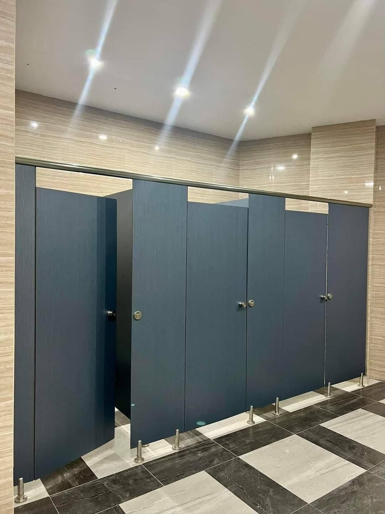

Sealed · Edge-banded · Termite-treated — built to last.
Home/Partitions
Partition Systems · Cagayan de Oro
CDO partitions for toilets, reception floors and open offices — sealed, termite-treated board and laminate systems, drawn against the actual floor plan and installed by the same crew that builds our cabinetry.

The same standard runs through every system we build in Cagayan de Oro — this is what changes when the drawing comes before the price.
01
Every board treated against termites before assembly — not brushed on after the fact.
02
18 mm board throughout, every exposed edge closed with edgebanding — no raw core left open to moisture.
03
Elevations and a full bill of quantities, approved by you, before a board goes on the saw.
04
Every panel, edge and hardware line priced and listed — no lump-sum guessing.
05
Fabricated in our own workshop and installed by the same crew — nothing handed off to a subcontractor.
A sample of completed installations in and around Cagayan de Oro.
Every job — kitchen, storage, partition or workstation — moves through the same tracked sequence. A ₱5,000 design deposit opens the drawing stage and is credited against your down payment.
01
Site visit, room and budget discussed, a schedule agreed.
02
Site measured, elevations drawn, revisions logged until you approve the sheet.
03
Boards, edging, hardware and accessories bought against the approved quantities.
04
Cut and assembled in our workshop to the approved drawing — not on your floor.
05
Set in place by our own crew, checked against the drawing before handover.
Yes — toilet cubicle partitions in sealed board and laminate, drawn to the actual washroom layout and installed on stainless or aluminium hardware, are a standing part of our partition system.
Both. Reception desk partitions, service-window dividers and open-office partitions run through the same drawing and quantity process as our toilet cubicles.
Yes — vanity counters, basins and splashbacks are drawn into the same washroom package as the cubicle partitions, so the whole room is one specification, not separate trades.
Our own crew, the same one that installs our kitchens and storage systems. Nothing on a partition job is subcontracted out.
Yes — every board is treated against termites before assembly and every exposed edge is sealed with edgebanding, the same standard as the rest of our cabinetry.
One drawing office, one crew, four systems — explore the rest of what we build in Cagayan de Oro.
Tell us the room and where you are in Cagayan de Oro. A site visit is arranged from there, and the drawing follows the visit.